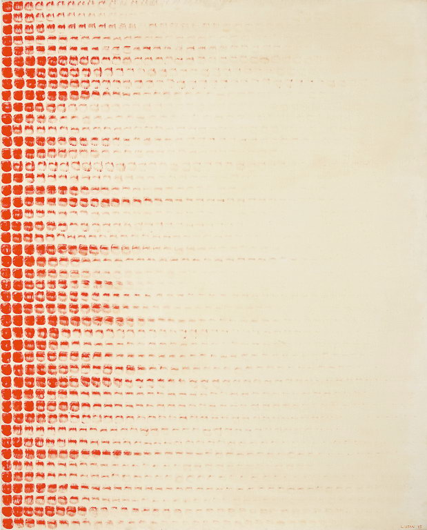

From Point Series (1972-1984)
tries to materialize, making palpable the passage of time: the artist dips his brush in the paint, then brush a series of colored dots from left to right on a canvas. The color fades as the color is deposited, visually illustrating the passage of time necessary for the production of the work.